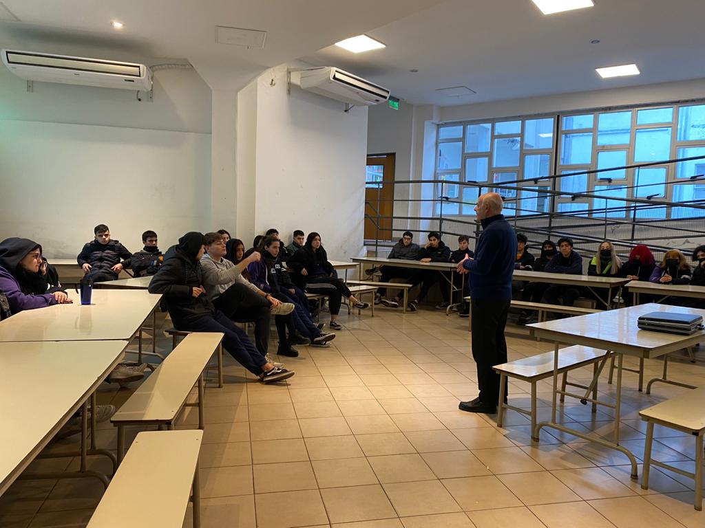
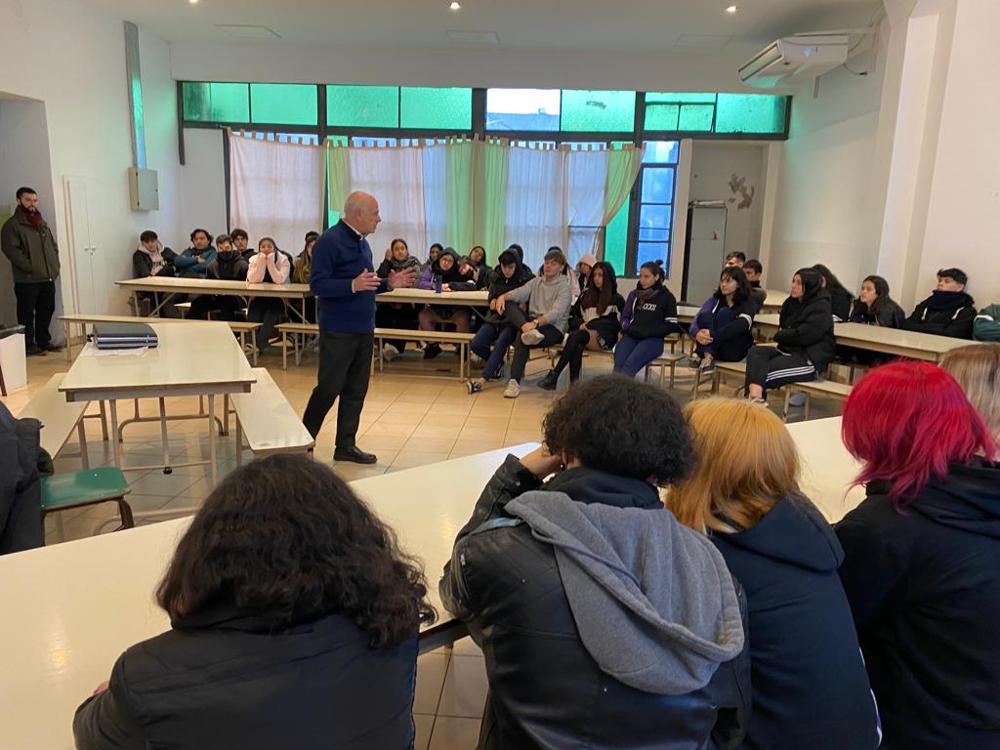
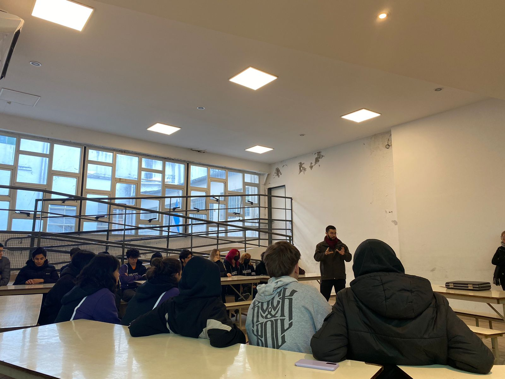

Charla UBA
Charla con el profesor Alberto Rodríguez Hauschildt.
Docente del CBC de la Universidad de Buenos Aires, dicta la materia de “Pensamiento Científico”.
Nos reunimos en la sala de encuentro donde recibimos al profesor Hauschildt, quien nos dio una
charla muy entretenida acerca de la materia que dicta en la universidad; nos brindó información sobre
la UBA y cómo es la vida universitaria.
En primera instancia el profesor se presentó, nos contó lo emocionado que estaba por tener la oportunidad
de darnos la charla en el colegio donde él había concurrido años atrás cuando realizó el profesorado.
Comenzó a contarnos acerca de su materia, de qué se trata, qué tipo de temas se plantean en la clase.
También estuvo presente el profesor Pagano, encargado de dar la materia de Derecho en el CBC. Aportó
mucho a la charla, dándonos su punto de vista respecto a cómo es el desarrollo del CBC y proporcionándonos
consejos para cuando comencemos nuestra vida universitaria.
Concluimos la reunión con algunas preguntas de los alumnos y agradeciendo a los profesores por su tiempo y armonioso momento compartido.


